Kamiichi, Toyama: things to do, food and stays
Kamiichi · Toyama
Kamiichi
Highlighted on the Toyama map.

Stay
metate
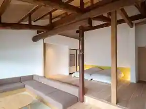
metate
Inn in Kumano, Kamiichi with a renovated traditional house; 5-minute drive from Kamichi Station.
つるぎ恋月
Tsurugi Koi Gatsu
立山の懐 ぬくもりを飾る宿 ゆのみこ 湯神子温泉
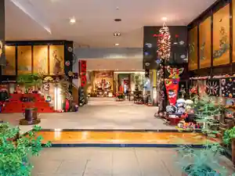
Tateyama No Futokoro Nukumoriwo Kazaru Yado Yunomiko Yu Kamiko Onsen
Inn at Yukamiko Onsen in Yukamiko, Kamiichi with a quiet countryside setting.
HOTEL R9 The Yard 上市
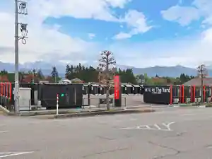
HOTEL R9 The Yard Kamichi
Dining
そうめん金龍
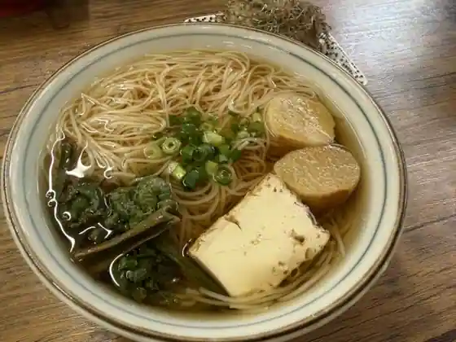
Somen Kinryu
中華そば あざみ 大岩本店
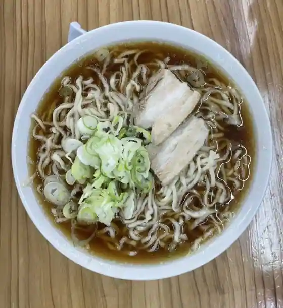
Chuka Soba Azami Oiwa Hon
八笑
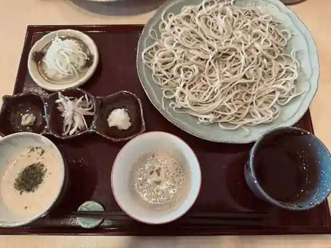
Hachi Warai
からしし
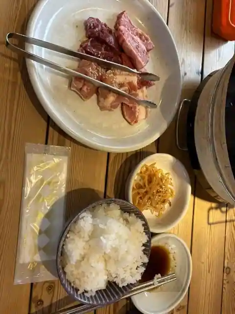
Karashishi
旅館 だんごや
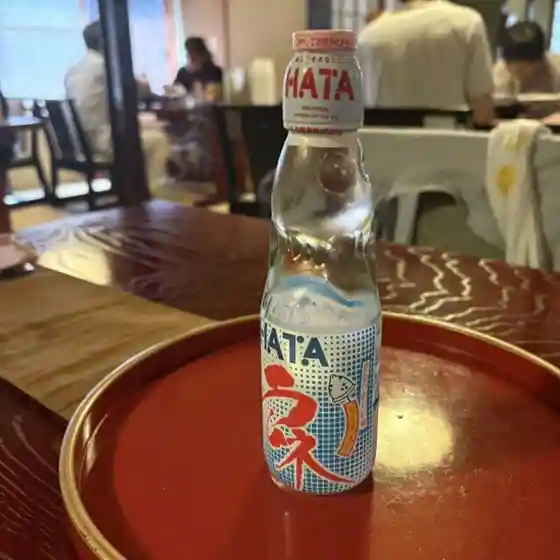
Ryokan Dangoya
旅館 大岩館
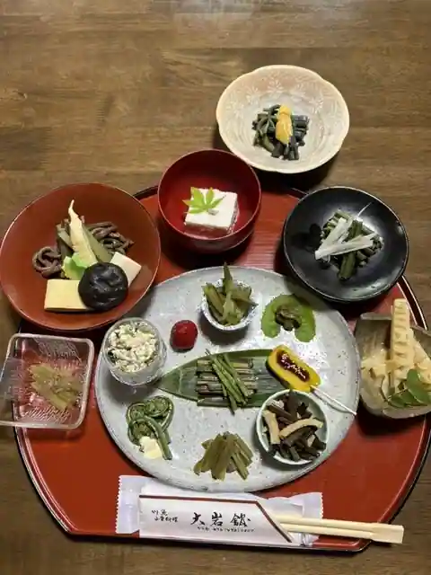
Ryokan Oiwa Kan
都
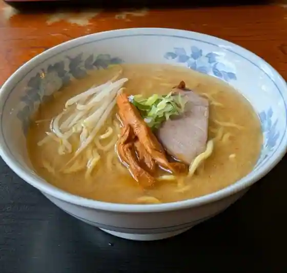
Miyako
ゆのみこ
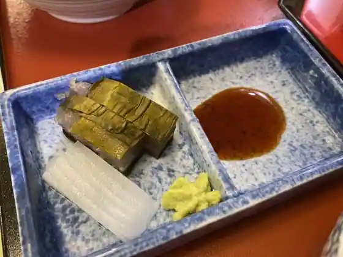
Yunomiko
ソラ・ニワ
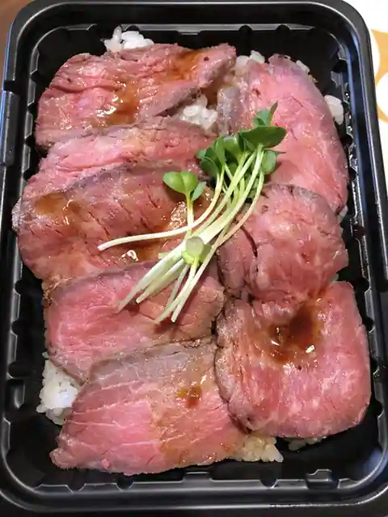
Sora Niwa
M’s CLOUD
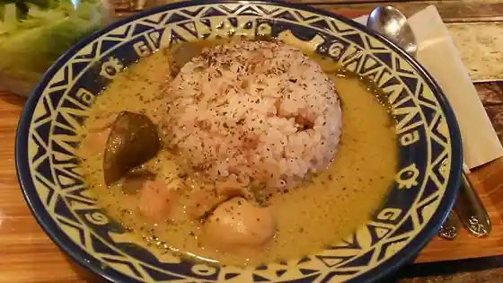
M s CLOUD
もつ煮込みうどん専門店劔
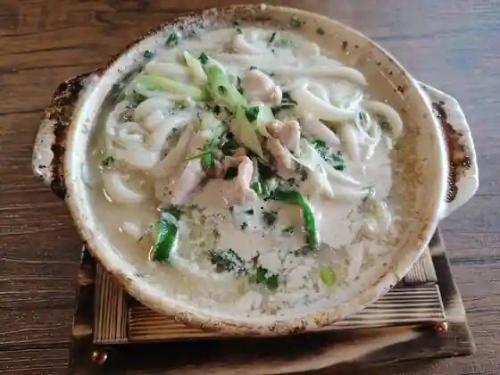
Motsu Nikomi Udon Senmonten Tsurugi
蕎麦みつば
Soba Mitsuba
十割そば専門店&喫茶 グラーノ
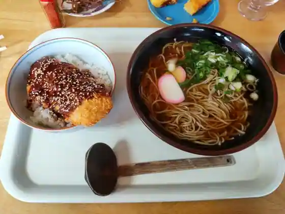
Ju Wari Soba Senmonten & Kissa Gurano
居魚家さかい
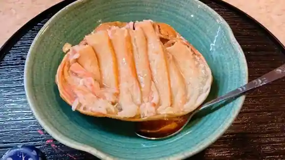
Kyo Sakana Ie Sakai
Pâtisserie et Pains
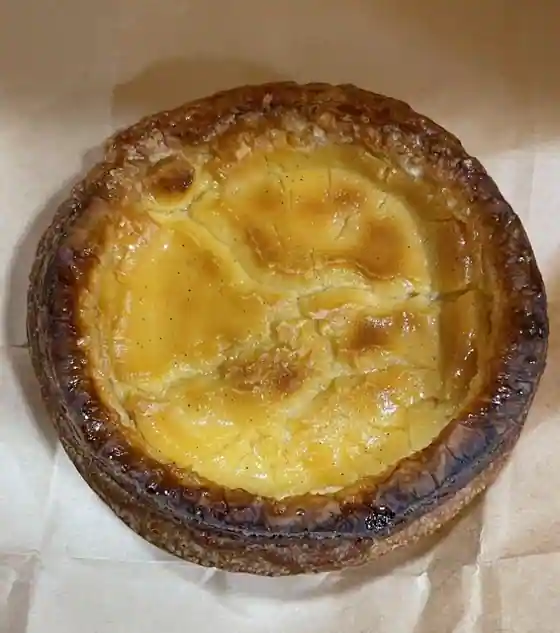
P A tisserie et Pains
香雅
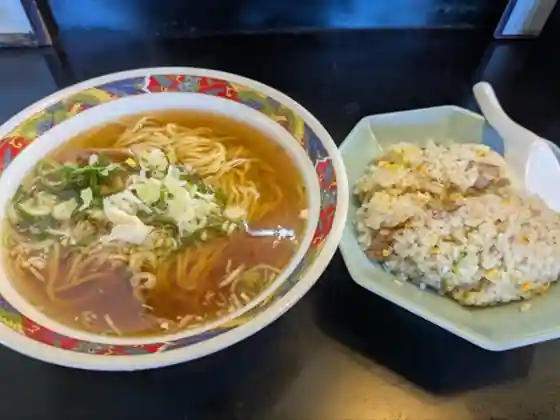
Kaori Masa
陣ya
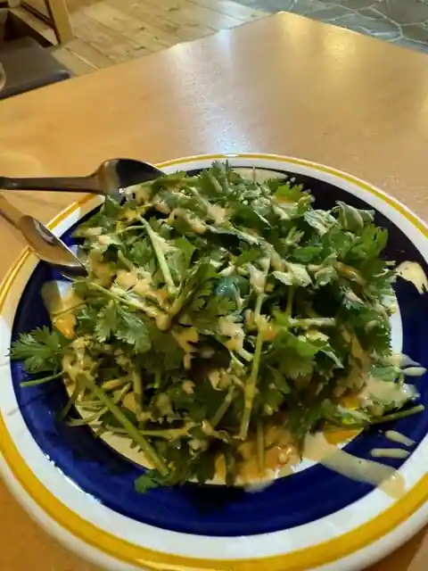
Jin ya
くじら堂
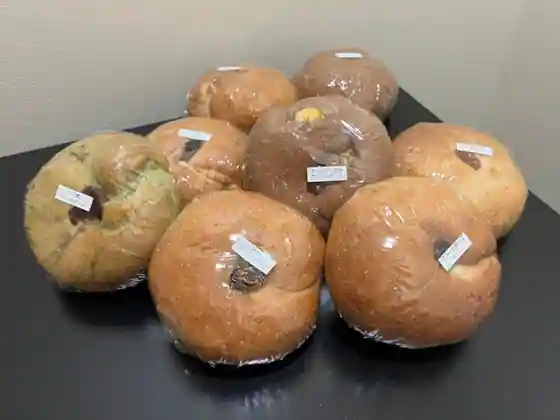
Kujira Do
きっさ 城山
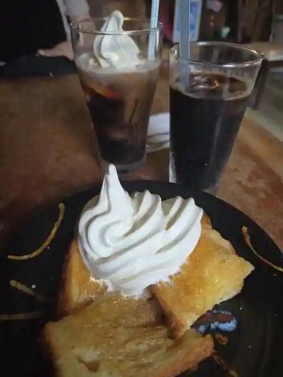
Kissa Shiroyama
馬場島荘
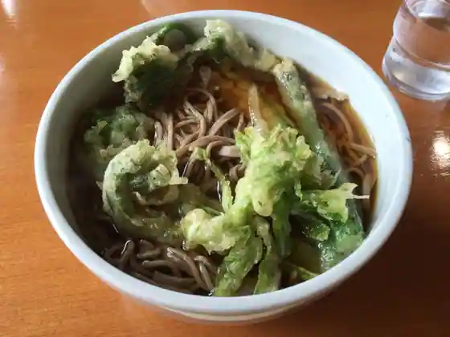
Baba Shima So
山本屋
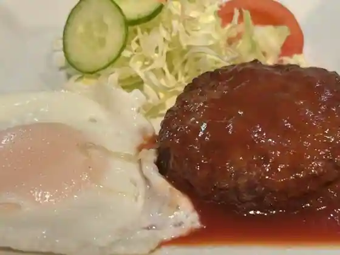
Yamamotoya
宝来
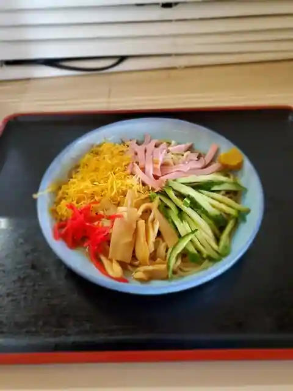
Horai
ぷぷぷ
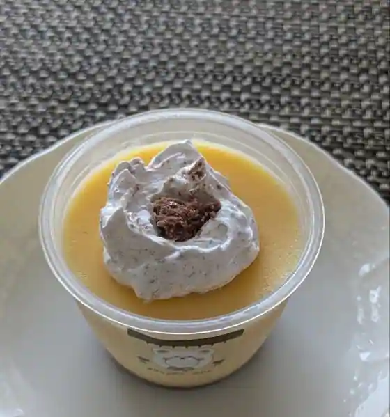
Pupupu
Sights
Oiwa Fudo Baths

Shaku Izumi Tera Ento Bunsui So

Chuka Soba Senmonten Azami Oiwa Main Shop

Yakuyo Shokubutsu Shido Center

Oiwa Kawa Shinsui Park
Yado & Maruchisupesu (metate) Metate
(Okamikodomo no Ame to Yuki) Butai Moderu
Sengan Kei
Tsurugi Seishonen Ryoko Village (Baba Shimano Ei Ba) Tsurugiseishonenryokomura (Bambajimayaeijo)
I Orihashi, I Orihashi Sagan Plaza
Ue Kyoden Chuo Park
Autumn Leaves no Baba Shima Shinrin Serapiirodo, Nakayama Sansaku Koyo no Bambajimashinrinserapiirodo,
Fukuichi
Shiki Ryori Hana Nama
Yumi no Sato Rekishi Bunka Kan
Baba Shima So
Nishida Art Museum
Kobodaishi no Shimizu (Goma Do) Kobodaishi no Shimizu (Gomado)
Ana no Tani no Reisui
Ganmoku Yama Tateyama Tera
Furusato Tsurugi Oya Nature Park Campground Oto Campground
Kamiichi Tennen Onsen Arupusu Baths
Oiwa Yamabi Ishidera
Kamiichi Town Hall